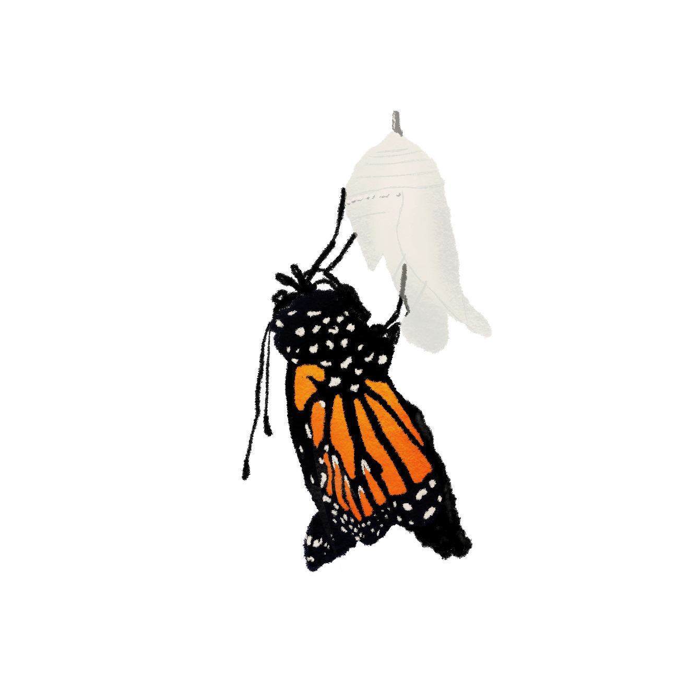

<!DOCTYPE html>
<html>

<head>
	<meta charset="utf-8">
	<meta name="viewport" content="width=device-width">
	<title>Homework 1-Narrative</title>
	<link href="style.css" rel="stylesheet" type="text/css" />
</head>
<style>
	h2 {
		color: rgb(255,126,0);
	}
</style>
<style>
	h1 {
		color: rgb(59,122,87);
	}
</style>

<body>
	<style>
		body {
			background-color: rgb(239,222,205);
		}
	</style>
</body>
<h2>Stage 4- Adult</h2>

<p> 
    <p><em>Stage 4 Photo</em></p>

The butterfly wings will be crumpled and wet after<br>
emerging, so they must wait about an hour to begin flying.<br>
They are extermely vulnerable to preditors during this time.

<p>
    <a href="pageseven.html"> Next Stage </a></p>
    <style>
    p{ color: rgb(255,126,0);
    } 
    </style>
   </p>

   <script src="script.js"></script>
</body>
</html/>